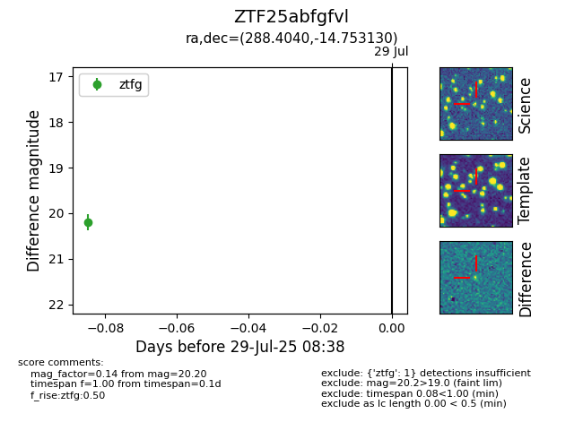

Target ZTF25abfgfvl at 2025-07-29 08:38, see:
FINK: fink-portal.org/ZTF25abfgfvl
Lasair: lasair-ztf.lsst.ac.uk/objects/ZTF25abfgfvl
ALeRCE: alerce.online/object/ZTF25abfgfvl
alt names
ZTF25abfgfvl (ztf,fink)
coordinates:
equatorial (ra, dec) = (288.4040,-14.75313)
galactic (l, b) = (22.1074,-11.49450)
photometry
last ztfg=20.20
1 ztfg detections
